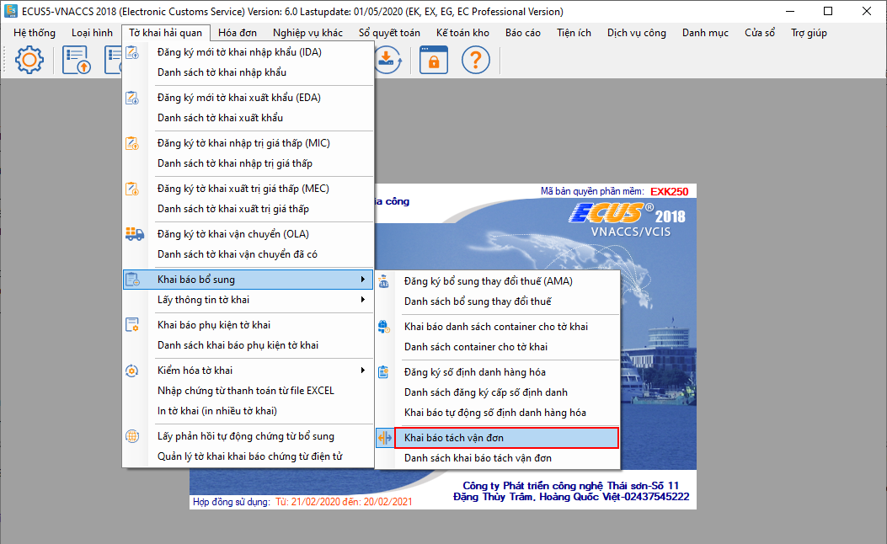
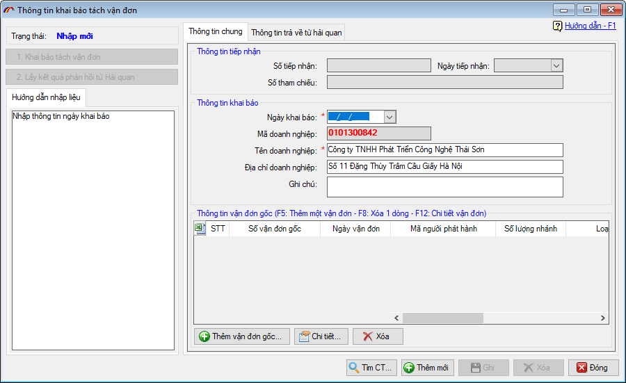
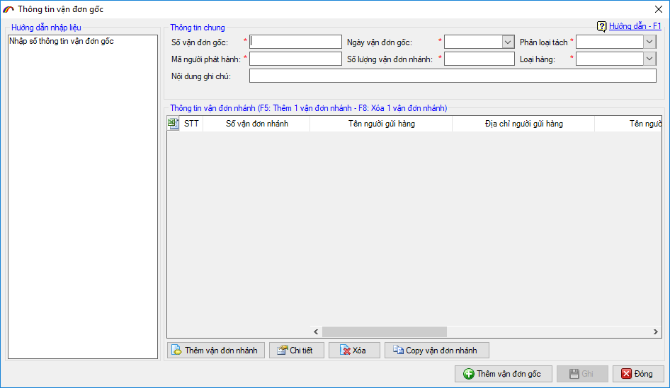
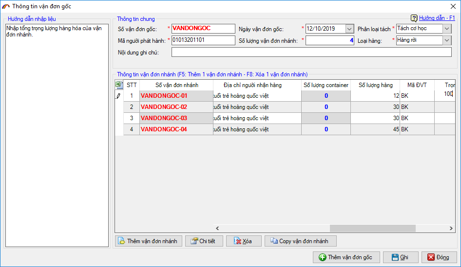
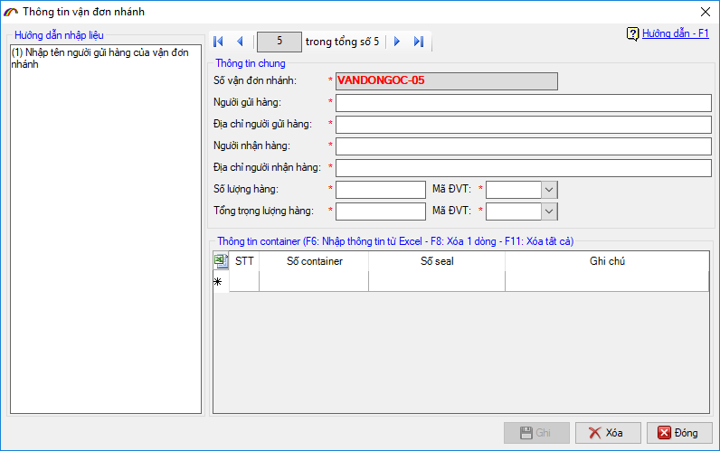
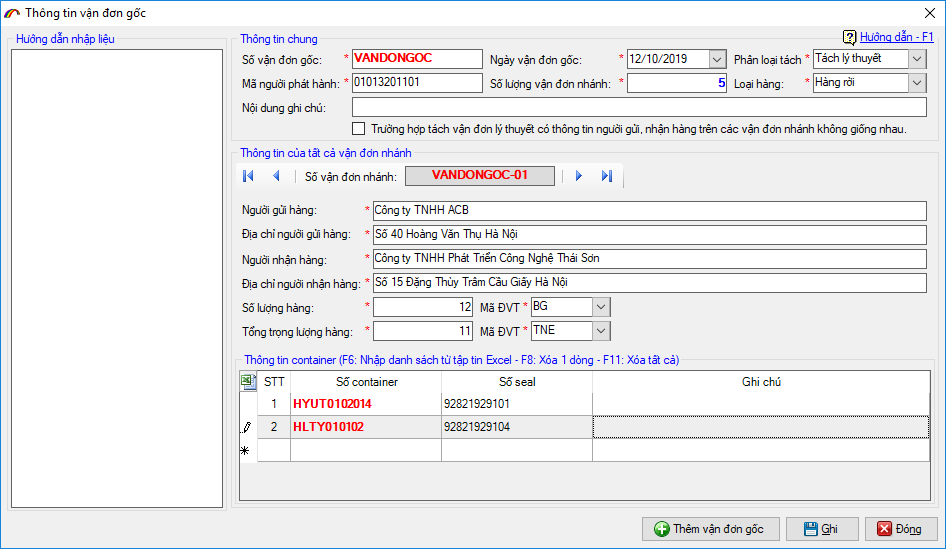
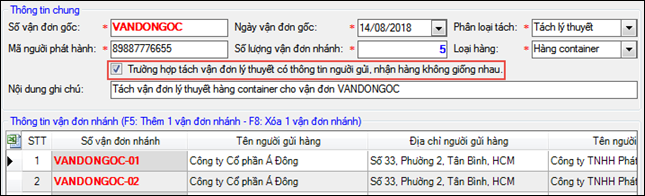

KHAI BÁO TÁCH VẬN ĐƠN
Theo quy định tại Điểm b, Khoản 7 Điều 1 Thông tư 39/2018/TT-BTC (sửa đổi, bổ sung Thông tư 38/2015/TT-BTC) thì “Một vận đơn phải được khai trên một tờ khai hải quan nhập khẩu. Trường hợp một vận đơn khai cho nhiều tờ khai hải quan, nhiều vận đơn khai trên một tờ khai hải quan hoặc hàng hóa nhập khẩu không có vận đơn thì người khai hải quan thực hiện theo hướng dẫn tại mẫu số 01 Phụ lục II ban hành kèm Thông tư này”.
Theo đó Trường hợp một vận đơn khai báo cho nhiều tờ khai hải quan, người khai hải quan thông báo tách vận đơn với cơ quan hải quan trước khi đăng ký tờ khai hải quan theo các chỉ tiêu thông tin quy định tại mẫu số 12 Phụ lục II thông qua Hệ thống xử lý dữ liệu điện tử hải quan. Hệ thống tự động tiếp nhận, kiểm tra, phản hồi việc tách vận đơn cho người khai hải quan ngay sau khi nhận được thông báo tách vận đơn. Người khai hải quan sử dụng số vận đơn nhánh đã được phản hồi để thực hiện khai tại ô Số vận đơn.
Việc khai báo tách vận đơn (nhập khẩu) được sử dụng trong các trường hợp như: Hàng hóa cùng vận đơn của cùng đơn vị xuất nhập khẩu nhưng khác loại hình; Hàng hóa chung container, chung chủ hàng thực hiện lấy hàng làm nhiều lần.
Thời điểm khai báo là trước khi đăng ký tờ khai nhập khẩu, việc khai báo tách vận đơn sẽ do một trong 2 đối tượng sau thực hiện:
- Người phát hành vận đơn hoặc người được người phát hành vận đơn ủy quyền.
- Người nhận hàng ghi trên vận đơn (người nhập khẩu)
Sau đây là hướng dẫn các bước thực hiện khai báo tách vận đơn trên phần mềm ECUS5VNACCS của công ty Thái Sơn.
Từ menu "Tờ khai hải quan / Khai báo bổ sung" bạn chọn mục "Khai báo tách vận đơn" như hình sau:

Màn hình chức năng hiện ra:

Tiến hành nhập thông tin cho chứng từ, nhấn nút "Thêm vận đơn gốc" hoặc nhấn phím tắt F5 để thêm mới thông tin vận đơn gốc đang cần tách:

- Số vận đơn gốc: nhập vào số vận đơn gốc cần tách.
- Mã người phát hành:
- Trường hợp là người đề nghị tách vận đơn là người vận chuyển: Nhập mã của người phát hành vận đơn đề nghị tách.
- Trường hợp là người nhận hàng ghi trên vận đơn: Nhập mã số thuế của người nhận hàng ghi trên vận đơn (người nhập khẩu)
- Loại hàng: chọn loại hàng khai báo theo vận đơn, hàng rời hay hàng container.
- Số lượng vận đơn nhánh: nhập vào số lượng vận đơn nhánh mà bạn muốn tách, mỗi vận đơn gốc được tách tối đa thành 99 vận đơn nhánh.
- Phân loại tách: bạn chọn loại phân tách tùy vào trường hợp và ý nghĩa cụ thể như sau:
- Tách vận đơn cơ học: áp dụng khi hàng hóa có thể tách biệt theo đơn vị tính khai báo, có thể khai báo và lấy hàng đơn lẻ theo từng vận đơn mà không ảnh hưởng đến lượng hàng còn lại của vận đơn gốc. Ví dụ 1 vận đơn gốc có 2 container hàng hóa, container 1 chứa mặt hàng A, container 2 chứa mặt hàng B thì có thể lấy tách thành 2 vận đơn để khai báo 2 tờ khai riêng biệt với mặt hàng A để lấy container 1 trước, mặt hàng B sau...
- Tách vận đơn lý thuyết: áp dụng trong trường hợp không thể tách biệt hàng hóa được đóng trong phương tiện chứa hàng theo vận đơn (container, kiện...) khi tách vận đơn và việc tách vận đơn chỉ phục vụ việc khai hải quan, khi lấy hàng phải lấy toàn bộ hàng hóa thuộc tất cả các vận đơn đã tách.
Từ ý nghĩa của phân loại tách ở trên, phần mềm đưa ra hai cách nhập liệu vận đơn nhánh thuận tiện cho người dùng như sau:
a) Trường hợp 1: Tách vận đơn cơ học.
Khi bạn chọn phân loại tách vận đơn cơ học và nhập số lượng nhánh cần tách, phần mềm sẽ hiển thị giao diện để bạn nhập thông tin chi tiết cho các vận đơn nhánh. Các số vận đơn nhánh này được phần mềm tự động sinh ra theo cấu trúc được quy định = SỐ VẬN ĐƠN GỐC-SỐ NHÁNH (01 đến 99). Ví dụ:

Để nhập thông tin chi tiết cho vận đơn nhánh, bạn có thể nhập trực tiếp trong danh sách lưới, hoặc chọn vào vận đơn nhánh và nhấn nút "Chi tiết".

Bạn cũng có thể sử dụng chức năng copy vận đơn nhánh bằng cách chọn vận đơn nhánh cần copy, sau đó nhấn vào nút "Copy vận đơn nhánh", sau khi copy tăng thêm vận đơn nhánh, phần mềm cũng sẽ tự động cộng thêm số lượng vào chỉ tiêu "Số lượng vận đơn nhánh".
b). Trường hợp 2: Tách vận đơn lý thuyết.
Tách lý thuyết thì các thông tin về số lượng hàng, tổng trọng lượng hàng, đơn vị tính, danh sách container (nếu có) và thông tin người nhận, người gửi là giống nhau. Do đó, phần mềm hỗ trợ để người dùng không phải nhập lặp lại các thông tin đó trên các vận đơn nhánh khác nhau. Bạn chỉ đơn giản là nhập số lượng vận đơn nhánh, nhập một lần các thông tin người nhận, gửi, số lượng, trọng lượng...và Ghi lại. Lưu ý là số vận đơn nhánh vẫn được tự động tạo ra theo cấu trúc = SỐ VẬN ĐƠN GỐC-SỐ NHÁNH (01 đến 99). Ví dụ vận đơn gốc: VANDONGOC, tách 2 nhánh thì số vận đơn nhánh tương ứng là: VANDONGOC-01, VANDONGOC-02.

Trường hợp thông tin người nhận người gửi khác nhau, bạn đánh dấu tích chọn vào mục:

Sau khi hoàn tất việc nhập liệu, bạn kiểm tra lại lần cuối để chắc chắn các thông tin đã chính xác, sau đó tiến hành gửi lên cơ quan Hải quan bằng cách nhấn vào nút "1.Khai báo tách vận đơn" và thực hiện Lấy kết quả phản hồi từ cơ quan Hải quan về. Sau khi khai tách vận đơn thành công, doanh nghiệp sử dụng số vận đơn nhánh đã tách để khai báo tại chỉ tiêu Số vận đơn trên tờ khai nhập khẩu.
Lưu ý quan trọng: Hiện tại chức năng khai báo tách vận đơn hệ thống không cho phép Sửa, Hủy, do đó doanh nghiệp trước khi gửi lên cơ quan hải quan cần kiểm tra chính xác lại các thông tin khai báo.
Bản quyền © thuộc về Công ty TNHH Phát triển công nghệ Thái Sơn